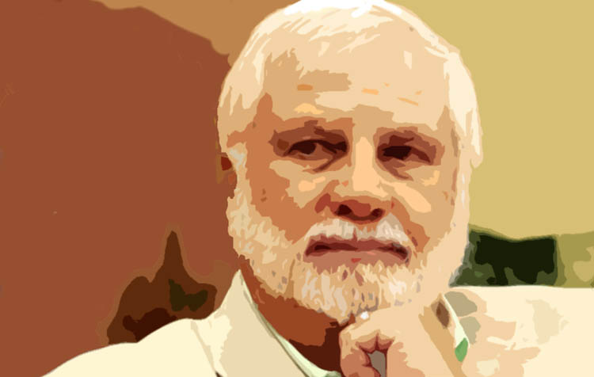
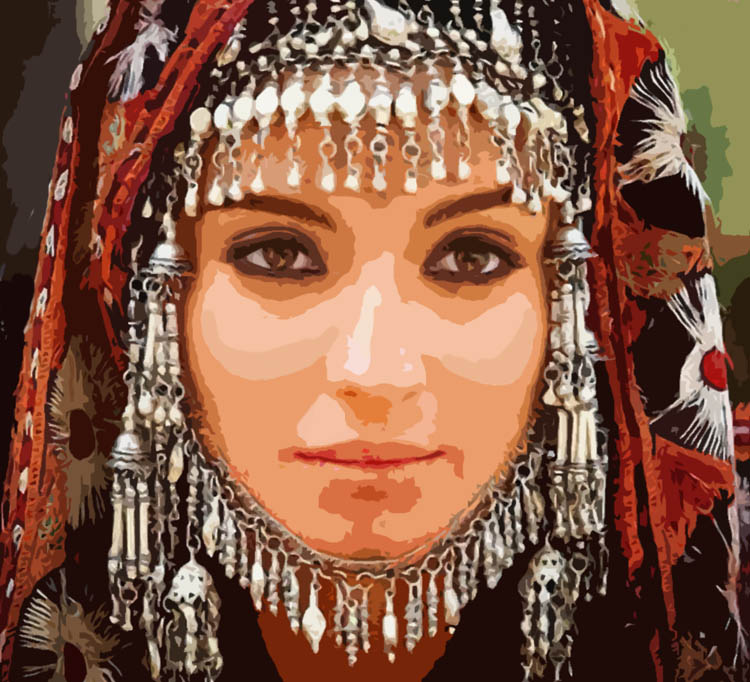

РИК ДЖОЙНЕР - о роли творчества в теле Мессии
6 июня 2007 года я увидел открытые небеса и огненный шар, похожий на метеорит, который летел прямо на меня. Когда я попытался от него увернуться, он сразу же отреагировал, поэтому я знал, что не смогу избежать удара. Он ударил меня в грудь и, хотя физически я ничего не почувствовал, меня всего наполнил огонь, пройдя через все мое тело. Он жег меня, но не физически. Это был духовный огонь, который я ощущал в своем сердце, а не в теле. Я также чувствовал радость и оживление, подкрепление и ободрение от этого.
Фрагмент пророчества Рика Джойнера - "Самая тяжелая материя"

Рик ДжойнерА затем я увидел самое красивое свадебное платье над собой. Оно было сшито из неземной материи. Платье было чистейше белое, но при этом излучало прекраснейший голубой и золотой цвета.
На следующий день я снова увидел открытые небеса, и огненный шар был там. И тогда мне было дано понимание. Огненный шар двигался в далеком космосе. Вокруг было все такое свежее и новое, что я знал, что вижу этот шар в самом начале творения. Присутствовала также великая радость и красота, схожие с прекрасным весенним утром, даже в космосе. Все, казалось, источает красоту, радость и свежесть.
Посмотрев на этот огненный шар, я увидел его внутренность. В ядре был еще один шар из голубого с золотым металла. Именно это ядро было причиной огня, было похоже на ядерную реакцию, исходящую из этой внутренней сферы. Эта сфера была сделана из самой плотной, тяжелой материи, какая только возможна. Она была также самой важной вещью для Бога – Его желание к Своей невесте.
Я знал, что поэтому шар меня ударил до того, как мне было показано свадебное платье. Главный огонь, главная страсть Бога – к Его невесте. Мне было это показано в начале творения, чтобы я понял, что главное на сердце Бога, когда Он создавал вселенную, - это Его невеста, которая станет Его спутницей в вечности. Я знал, что мне было дано понимание, что веками этот огонь существовал без изменений, чтобы я мог осознать как Его терпение, так и его решимость обрести Свою невесту. Это главная причина, почему Он создал вселенную, главная причина ее существования.
Бог любит Свое творение, как духовное, так и физическое. Он любит каждого ангела и каждое Свое творение, поэтому Он замечает даже одного скворца, который падает на землю. И все же Его первая любовь – это Его невеста. Хотя Он любит землю и всех ее обитателей, но, когда Он стал человеком, когда пошел на крест, на сердце у Него была Его невеста.

НевестаСвадебное платье
Как я делился выше, свадебное платье было невообразимо красивым, оно было лучше всего, что я видел. Оно не только было сделано из неземной материи, его дизайнер имел неземные дары. Это тоже важное послание. Эти дары даются церкви, чтобы помочь невесте подготовиться.
В Ветхом Завете мы часто читаем, что Дух Божий сошел на кого-то. К примеру, 2 Паралипоменон 15:1, или 24:20. Тем не менее, первое упоминание о наполнении Духом Божьим было в Исходе 31:1-5, а человеком был Веселеил: "И сказал Господь Моисею, говоря: 2 смотри, Я назначаю именно Веселеила, сына Уриева, сына Орова, из колена Иудина; 3 и Я исполнил его Духом Божиим, мудростью, разумением, ведением и всяким искусством, 4 работать из золота, серебра и меди, 5 резать камни для вставливания и резать дерево для всякого дела".
Задумайтесь об этом: именно художник/скульптор стал первым человеком, которого наполнил Святой Дух, не священник, не царь, не пророк, а именно творческий человек.
Это должно заставить нас понять значимость, которую Господь вложил в искусство. Его жилище, скиния, черновая копия или модель церкви, нерукотворного храма, должно было быть построено самым лучшим мастером. В искусстве есть сила, которую церковь по большей части не осознавала в течение многих веков. Это должно быть восстановлено, потому что Господь даст художникам, мастерам и всем творческим людям в Своем доме беспрецедентную силу пророчествовать через свое искусство.
Когда мы смотрим на природу: закат, снежинки, цветы, нам становится очевидно, что такого художника, как Бог, нет. Тем не менее, вся красота, что мы видим, была создана из любви к человечеству. Это дар. Любовь мотивировала Его искусство. Если вы когда-нибудь видели закат, и вам казалось, что это было создано специально для вас – так оно и есть. Божье искусство для Его людей. Обратное тоже скоро будет реальностью – высшее искусство человечества будет исходить из любви к Богу.
На творческих людей идет помазание еще большее, чем было дано Веселеилу для построения скинии Моисеевой. Это было лишь прототипом, а то, что грядет станет осуществлением замысла. Слава Нового Завета больше, чем Ветхого, и все, что дано для украшения невесты будет больше и лучше, чем то, что было дано для украшения прототипа. Мы не будем уже оглядываться на величайших мастеров прошлого. Величайшие мастера всех времен будут жить среди нас.
На творческих людей идет помазание Святого Духа. Искусство снова будет мотивировано любовью к Богу. Это искусство будет иметь такую пророческую силу, какую еще не видело человечество. Чем чище любовь, тем чище и мощнее будет искусство. Это дары Бога Его невесте, и они глубоко затронут ее, чтобы притянуть ее сердце к Нему и чтобы выразить то, что у нее на сердце к Нему.
Самое истинное искусство всегда исходит из высочайшего поклонения, и само является поклонением. Поэтому в конце века самые креативные дары, какие только видел мир, будут находиться в церкви. Это станет частью одеяний невесты, а одежда будет отражать содержимое сердца. Она будет видеть Его славу, будет отражать Его славу и излучать славу во всем, что делает. Слава будет ее одеянием, и шлейфом будет следовать за ней.
Еврейское слово kabowd (кавод) – это слава, что буквально значит «вес». Наивысшая слава невесты, субстанция с самым большим весом во всем творении – это любовь Господа к ней. Ее истинная слава состоит в том, что она была в сердце Господа с самого начала. Это никогда не менялось и не изменится. К ней Его желание. Из-за этого о свадебном пире придет совершенно новое откровение. Величайшая радость творения – видеть Творца, радующегося Своей невесте. Эта радость начнет мотивировать новый род служителей, некоторые из которых будут одними из величайших умельцев и мастеров всех времен, и будут истинно наполнены Духом.
Я говорю не только о художниках, скульпторах или музыкантах, но и об истинных апостолах, евангелистах, пасторах, учителях, которые даны, чтобы снаряжать (совершать) святых, чтобы они стали церковью, которой призваны быть. Они будут так креативны в своих служениях, что служения станут очень притягательны. Слова посланий будут иметь такую творческую силу, что их красноречие будет привлекать толпы людей. И речь не о развлечении, а о помазании ораторского искусства, и Божье Слово достойно такого убранства.
Креативность (творчество) основная черта благословенного Творца. Церковь будет излучать эту черту, будучи свидетелем Его характера. Креативность будет проистекать из всего, что она делает, потому что ее сердце будет в таком единении с Творцом. Лучшая музыка, лучшее искусство всякого рода будет исходить из церкви, как поклонение Господу. Эти дары будут как притягивать, так и снаряжать невесту на ее высшую цель – ее единение с Царем. И так народы потянутся на пир.
Полную версию текста пророчества см. здесь
От редактора: Если вам известны другие пророчества последнего времени о роли и служении художников, музыкантов, др. творческих людей. Напишите об этом в комментариях под этой публикацией, приложив к сему ссылку на первоисточник, книгу, фильм и т.п. Это может быть пророчество или виденье, относящееся ко всему христианскому миру, отдельным странам, церквям, общинам и даже отдельным людям. Присылайте ваши личные свидетельства, если вы получили такое слово для себя или ваших друзей. Возможно, они достойны публикации и будут полезны многим.